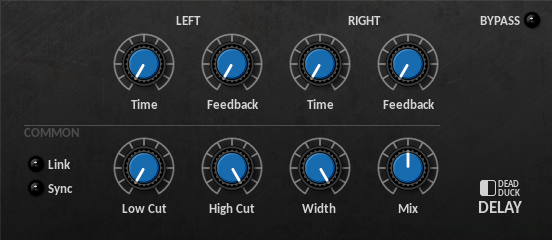
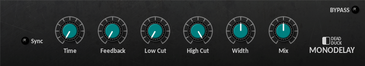
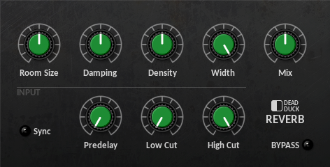

Delay and Reverb¶
Delay¶
A stereo delay featuring independent left and right channels with optional stereo linking and tempo-sync.
The following controls are provided:
Sync - switch between frequency (off) and tempo-based timing (on).
Link - set the right channel to use the same settings as the left channel.
Time - set the delay time from 10 ms to 6 sec or 1/32T to 1/1D according to the sync setting.
Feedback - set the feedback amount from 0 to 100%.
Low/High Cut - set the highpass and lowpass filter cutoff frequencies from 10 Hz to 20 kHz. These are used to filter the delay return signals before they are passed to the output stage.
Width - set the stereo separation for the left and right delays from 0 (mono) to 100% (stereo).
Mix - set the dry/wet balance of the output from all dry (0) to all wet (100%).
MonoDelay¶
A mono-delay with optional ‘ping-pong’ stereo output and tempo-sync.
The following controls are provided:
Sync - switch between frequency (off) and tempo-based timing (on).
Time - set the delay time from 10 ms to 6 sec or 1/32T to 1/1D according to the sync setting.
Feedback - set the feedback amount from 0 to 100%.
Low/High Cut - set the highpass and lowpass filter cutoff frequencies from 10 Hz to 20 kHz. These are used to filter the delay return signals before they are passed to the output stage.
Width - set the stereo separation for the ‘ping-pong’ output from -100% (L-R) to +100% (R-L).
Mix - set the dry/wet balance of the output from all dry (0) to all wet (100%).
MonoDelay combines both stereo inputs into a single mono signal which is mixed to appear in the centre of the stereo field when the width control is set to 0. Non-zero width settings will introduce a stereo ‘ping-pong’ effect where each successive repeat will play alternately between the right and left channels, the value of the setting determining how far to the left or right each repeat is played. Negative width settings cause the ping-pong to movement to occur in the opposite direction, i.e left-right-left instead of right-left-right.
Reverb¶
An efficient algorithmic reverb with pre-delay and input filtering.
The following controls are provided:
Room Size - set the size of the simulated reverb space from 0 (small) to 100% (large).
Damping - set the amount by which the reverberations are deadened from 0 to 100%.
Density - set the amount of reverberations generated from 0 (low) to 100% (high).
Width - set the width of the stereo space occupied by the reverberations from 0 (mono) to 100%.
Mix - set the dry/wet balance of the output from all dry (0) to all wet (100%).
Sync - switch between frequency (off) and tempo-based timing (on) for the predelay time.
Predelay - set the delay before the reverb return signals are heard from 0 to 1 sec or 1/32T to 1/4 according to the sync setting.
Low Cut - set the highpass filter cutoff frequency from 10 Hz to 2 kHz.
High Cut - set the lowpass filter cutoff frequency from 1 kHz to 20 kHz
The low and high cut filters are used to process the input signal before it is passed to the reverb effect.